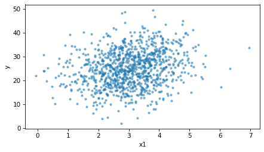
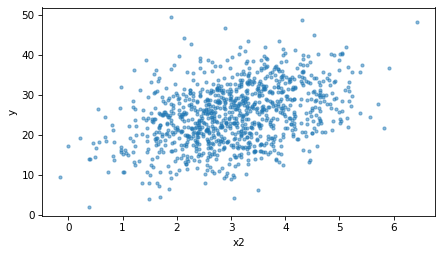
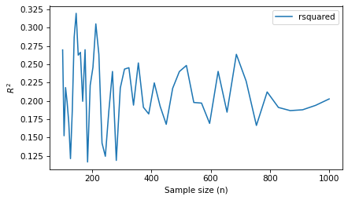
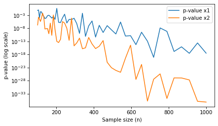
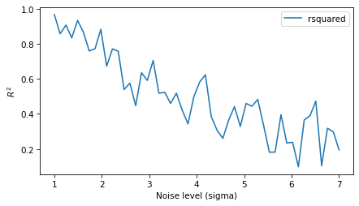
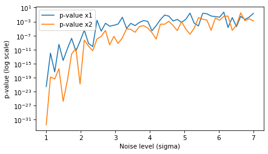

How Good is This Model?#
Here’s a question from the Reddit statistics forum.
Multiple Linear Regression: low R^2 value, but highly significant p-values (<0.01)
I am currently running a statistical analysis using Multiple Linear Regression (MLR), and I encountered a problem in that the regression produces a low R^2 value (0.21), but all 12 of my independent variables have a p-value less than 0.01.
For some context, I am doing an analysis using a public database related to social services. My sample size is roughly 10000, and the goal of this analysis is to find out whether the independent variables (factors) have an impact on the dependent variable.
Could you also recommend further diagnostic tests or other statistical analyses to justify the findings? Thank you!
This is a common question, and it makes sense because we think of both \(R^2\) and p-values as way to quantify how good a model is. If the model describes the data generating process well, we expect \(R^2\) to be high and the p-values to be small. When the two metrics are not consistent, it seems like there’s something that needs to be explained.
But that’s not right – the two metrics quantify different things:
If the p-values are small, that suggests that the associations between the dependent and independent variables are unlikely to be due to chance.
If \(R^2\) is large, that means that the independent variables are predictive – that is, if we know the independent variables, we can make better guesses about the dependent variable.
So it is possible to have small p-values and small \(R^2\) at the same time. In fact, it is quite common, especially when sample sizes are large.
Click here to run this notebook on Colab.
I’ll download a utilities module with some of my frequently-used functions, and then import the usual libraries.
Answer#
To demonstrate, I’ll generate fake data from a linear model with two independent variables, x1 and x2, and an error term with standard deviation sigma.
def generate_data(n, sigma):
inter = 10
beta1, beta2 = 2, 3
x1 = np.random.normal(3, 1, size=n)
x2 = np.random.normal(3, 1, size=n)
error = np.random.normal(0, sigma, size=n)
y = inter + beta1 * x1 + beta2 * x2 + error
return pd.DataFrame(dict(y=y, x1=x1, x2=x2))
Both variables really do affect y, but the error term is large compared to their effects.
Here’s a dataset with 1000 rows and sigma=7.
np.random.seed(1)
data = generate_data(1000, 7)
And here are the results of a linear regression.
import statsmodels.formula.api as smf
results = smf.ols('y ~ x1 + x2', data=data).fit()
display_summary(results)
| coef | std err | t | P>|t| | [0.025 | 0.975] | |
|---|---|---|---|---|---|---|
| Intercept | 11.5175 | 0.933 | 12.339 | 0.000 | 9.686 | 13.349 |
| x1 | 1.6534 | 0.219 | 7.541 | 0.000 | 1.223 | 2.084 |
| x2 | 2.7954 | 0.209 | 13.388 | 0.000 | 2.386 | 3.205 |
| R-squared: | 0.1944 |
The p-values for both variables are less than 0.001, and \(R^2\) is about 0.19 – close to the situation in the question.
The scatter plots show why.
There is a relationship between each variable and y, but it is weak compared to the variation in y.
def scatter(data, xvar):
plt.scatter(data[xvar], data['y'], marker='.', alpha=0.5)
decorate(xlabel=xvar, ylabel='y')
scatter(data, 'x1')

scatter(data, 'x2')

The correlations are small, too.
data.corr()
| y | x1 | x2 | |
|---|---|---|---|
| y | 1.000000 | 0.222737 | 0.385336 |
| x1 | 0.222737 | 1.000000 | 0.021857 |
| x2 | 0.385336 | 0.021857 | 1.000000 |
Now let’s see what happens as we vary the sample size. The following loop generates datasets with sizes from 100 to 1000, runs the regression, and collects \(R^2\) and the p-values.
np.random.seed(2)
sigma = 7
ns = np.logspace(2, 3)
res = []
for n in ns:
n = round(n)
data = generate_data(n, sigma)
results = smf.ols('y ~ x1 + x2', data=data).fit()
res.append((results.rsquared, results.pvalues['x1'], results.pvalues['x2']))
columns = ['rsquared', 'p-value x1', 'p-value x2']
sweep_n = pd.DataFrame(res, index=ns, columns=columns)
Here’s how \(R^2\) depends on sample size.
sweep_n['rsquared'].plot()
decorate(xlabel='Sample size (n)', ylabel='$R^2$')

\(R^2\) varies from one dataset to the next – less so with larger samples – but it doesn’t get bigger or smaller with sample size – it depends on how much of the variation in y the independent variables explain.
Here’s how the p-values depend on sample size.
sweep_n['p-value x1'].plot()
sweep_n['p-value x2'].plot()
decorate(xlabel='Sample size (n)', ylabel='p-value (log scale)', yscale='log')

The p-values get smaller as the sample size increases – with more data, it becomes less plausible that the apparent effects are due to chance.
So with a large sample, we can get very small p-values even when \(R^2\) is small.
Now let’s hold the sample size fixed and vary the amount of noise.
With a small sample, n=50, here’s what happens as sigma increases.
np.random.seed(3)
n = 50
sigmas = np.linspace(1, 7)
res = []
for sigma in sigmas:
data = generate_data(n, sigma)
results = smf.ols('y ~ x1 + x2', data=data).fit()
res.append((results.rsquared, results.pvalues['x1'], results.pvalues['x2']))
columns = ['rsquared', 'p-value x1', 'p-value x2']
sweep_sigma = pd.DataFrame(res, index=sigmas, columns=columns)
sweep_sigma['rsquared'].plot()
decorate(xlabel='Noise level (sigma)', ylabel='$R^2$')

As the noise increases, \(R^2\) decreases, because the independent variables explain a smaller share of the variation in y.
sweep_sigma['p-value x1'].plot()
sweep_sigma['p-value x2'].plot()
decorate(xlabel='Noise level (sigma)', ylabel='p-value (log scale)', yscale='log')

And the p-values increase, because the effects are harder to distinguish from noise.
So noise affects both metrics, but sample size only affects the p-values. That’s why small p-values and small \(R^2\) often go together when the sample is large.
Discussion#
\(R^2\) and p-values answer different questions. A small p-value means that the observed associations would be unlikely if the variables had no effect – with 10,000 observations, even a small effect produces a tiny p-value. \(R^2\) measures how much of the variation in the dependent variable the model explains. With data about people and social services, it is not surprising that 12 variables explain only about 20% of the variation – many other factors affect the outcome.
So the results OP reported are not contradictory, and they don’t indicate that something is wrong with the model. They mean that the observed associations are unlikely to be due to chance, but they explain only part of the variation.
For the goal stated in the question – finding out whether the factors have an impact – the more useful next step is not another diagnostic test but looking at the sensitivity of the outcome to each factor. For each factor, how much variability do you expect to see in practice? For the expected amount of variability, how much would the outcome change, according to the model? And how important would that change be in practice? A statistically significant effect can be too small to be important, and with a sample this large, almost any effect will be statistically significant.
Data Q&A: Answering the real questions with Python
Copyright 2024–2026 Allen B. Downey
License: Creative Commons Attribution-NonCommercial-ShareAlike 4.0 International